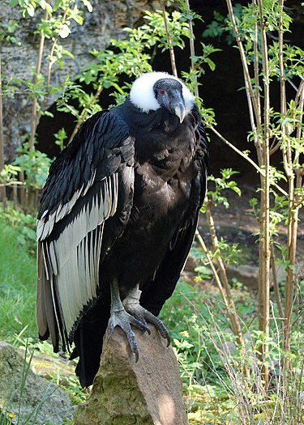

El cóndor andino, también cóndor de los Cerros, cóndor de los Andes, o simplemente cóndor (Vultur gryphus) es una especie de ave de la familia Cathartidae que habita en América del Sur. El orden al que pertenece su familia se encuentra en disputa. Se extiende por la cordillera de los Andes, cordilleras próximas a ella y las costas adyacentes de los océanos Pacífico y Atlántico. Es el ave no marina de mayor envergadura del planeta, no posee subespecies4 y su nombre procede del quechua kuntur.
Es un ave grande y negra, con plumas blancas alrededor del cuello y en partes de las alas. La cabeza carece de plumas y es de color rojo, pudiendo cambiar de tonalidad de acuerdo con el estado emocional del ave. A diferencia de la mayor parte de las aves de presa, el macho es mayor que la hembra.
Es un ave carroñera. Alcanza la madurez sexual a los cinco o seis años de edad y anida entre los 1000 y 5000 m s. n. m., generalmente en formaciones rocosas inaccesibles. Posee una tasa de reproducción muy baja; se espera que al menos ponga un huevo cada dos años. Es una de las aves más longevas, pudiendo alcanzar la edad de setenta y cinco años en cautiverio.
Es un símbolo nacional de Argentina, Bolivia, Chile, Colombia, Ecuador, Perú, teniendo un importante rol en el folclore y la mitología de las regiones andinas de Sudamérica. Ha sido declarado como el ave nacional de Ecuador desde su aparición en el escudo nacional, en 1834, además de ser declarado ave insigne en otros países como Argentina: en la provincia de Mendoza, donde se le otorga el título de "monumento natural provincial" mediante la ley n.º 6599 sancionada el 12 de mayo de 1998, lo mismo que la provincia de Santa Cruz mediante la ley n.º 2916 sancionada el 24 de agosto de 2006, mientras que la provincia de Tierra del Fuego lo declaró patrimonio natural mediante la ley n.º 558 sancionada el 19 de septiembre de 2002;9 y siendo el caso más reciente en Chile, que mediante decreto del 30 de junio de 2006 le ha otorgado también el título de monumento natural de Chile.
La Unión Internacional para la Conservación de la Naturaleza la cataloga como una especie vulnerable, ya que sufre la pérdida de su hábitat y el envenenamiento por la ingesta de animales intoxicados o de los propios cebos envenenados colocados ilegalmente por cazadores y ganaderos. Varios países iniciaron programas de reproducción en cautividad.
Es considerada como un patrimonio cultural y natural de Sudamérica.